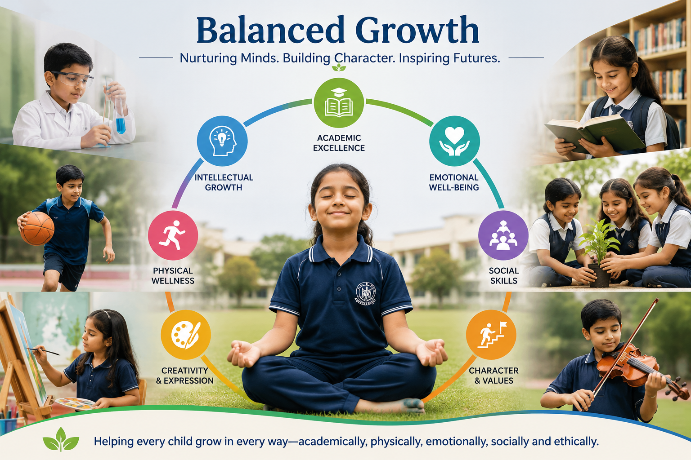

Share the concern
Tell us the child’s grade, confidence, screen habits, interest and learning goal.
Parent guidance
Parents can answer a few simple questions about grade, interest, confidence and goals. We suggest the right learning path or arrange a counselling call.

Answer a few calm questions and get a fresh recommendation for your child before you decide.
Parent course finder
This is for parents who are unsure whether their child should start with coding, AI, web development, projects or career-focused learning.
What parents get
We map the child to a learning path, explain expected project outcomes, and recommend whether 1:1, group or bootcamp is better.
Parent workflow
We do not push parents into a course. We help you understand the right fit and move only when you feel comfortable.
Tell us the child’s grade, confidence, screen habits, interest and learning goal.
We suggest the course, class mode and expected project outcome in simple language.
The child can begin with friendly guidance, small wins and practical activities.
Parents can discuss confidence, project output and the next step whenever needed.